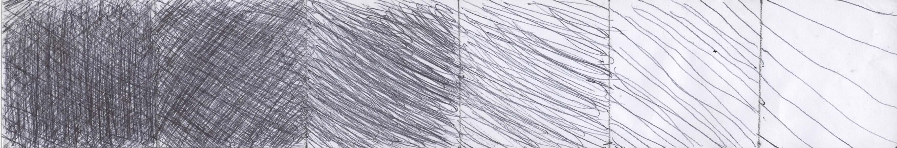

Vimos sobre linhas. Vemos algumas obras que usaram apenas linhas.

08/03/2024
Vimos sobre linhas. Vemos algumas obras que usaram apenas linhas.
Fizemos também uma atividade sobre fazer um degradê com linhas, em que consistia em fazer linhas mais separadas para as mais juntas e cruzando elas para ter um resultado mais escuro.
